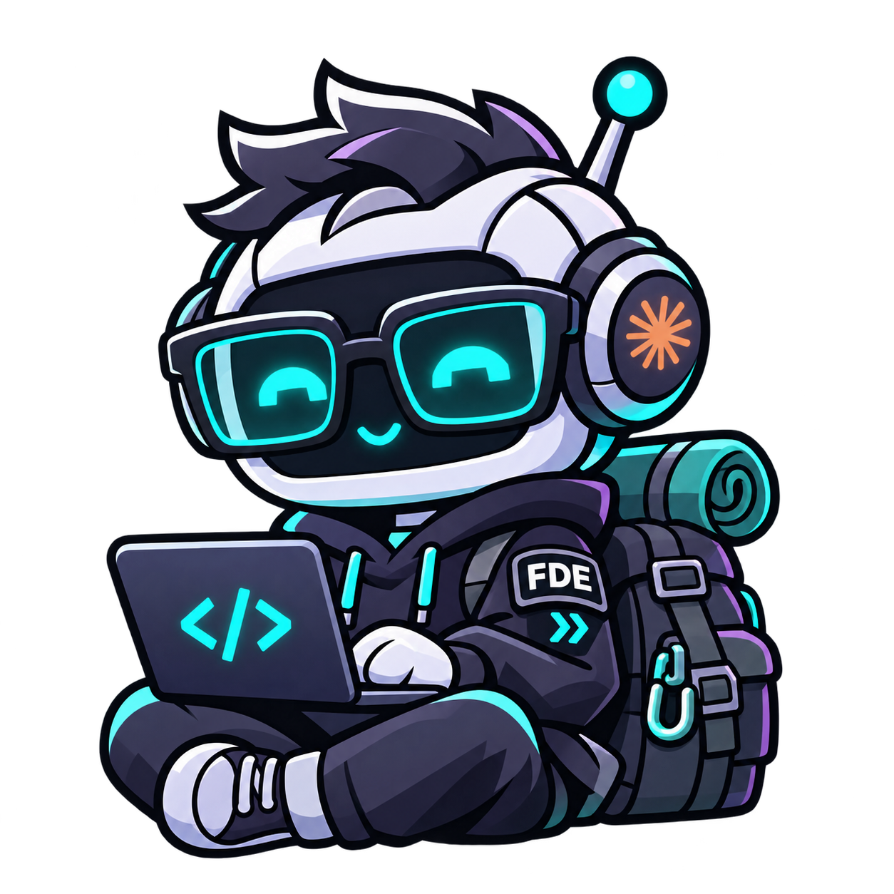

</>
dev / build it right
Implementation, debugging, architecture, refactoring, review, planning tickets and careful commits.
8 SKILLS · /dev:devMeet nerd-fde — your Forward Deployed Engineer workflow for Claude Code. Understand the repo. Make a plan. Ask before changing things. Ship with proof.

[ DEPLOYED TO YOUR IDE ]STATUS: NERDY ✓* Approval-first instructions are a workflow design goal, not a security guarantee. See documented hook limits.
A lightweight, modular collection of reusable skills. Five specialist plugins; one disciplined engineering workflow.
Implementation, debugging, architecture, refactoring, review, planning tickets and careful commits.
8 SKILLS · /dev:devRegression, coverage, browser testing, security checks and real before/after verification.
8 SKILLS · /qa:qaTurn fuzzy tickets into deliverable phases, estimates, Jira updates and stakeholder notes.
7 SKILLS · /pm:pmShared rules, project setup and a Python hook for selected Git and secret-file operations.
2 SKILLS · /core:principlesExplain code, learn unfamiliar concepts and recap a working session without losing context.
4 SKILLS · /general:generalTell an area router what you need. Claude chooses an appropriate specialist skill to follow.
4 ROUTERS · INCLUDED ABOVEDesigned around an approval-first loop that keeps scope small, decisions visible and claims backed by checks.
Inspect the actual code and the project's CLAUDE.md conventions.
Describe the minimal files, dependencies, trade-offs and risks.
Ask before modifications or external writes, based on the workflow rules.
Run focused checks; report evidence and anything not verified.
/dev:dev investigate the login bug and propose a fixOr target a skill directly with /dev:debug, /qa:regression or /pm:plan-feature.
nerd-fde was designed after reviewing approximately 1,300 recurring Claude Code prompts from July–November 2026. The goal was simple: encode repeated engineering expectations into reliable, reusable workflows.
These percentages are approximate categories from the creator's design notes, not product usage telemetry.
Source: docs/design.md · approximate distribution
Already using Claude Code? Add this repository as a plugin marketplace, then install the shared core and whichever specialist plugins you need.
Requires Claude Code, GitHub access and Python 3 for the core guard hook. Each plugin is installed separately.
Full installation guide ↗Software and AI engineer. Creator, maintainer and copyright holder of nerd-fde — an open-source Claude Code toolkit shaped by real development, QA and delivery workflows.
© 2026 Shreyansh Saagar · Released under the MIT License. An independent project, not affiliated with Anthropic.